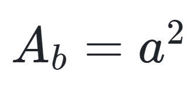
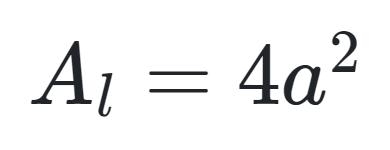
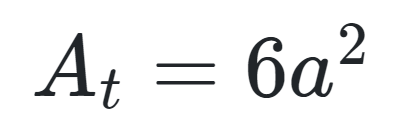
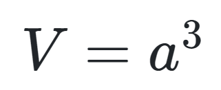
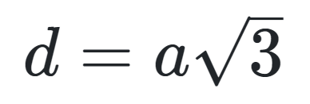
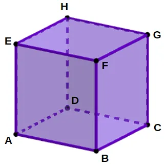

Cubo
Os elementos do cubo são os vértices, as arestas e as faces.
O cubo possui 6 faces quadradas, 12 arestas e 8 vértices.
A base do cubo é um quadrado de lado a. Assim, a área da base do cubo é dada pela fórmula:

A lateral do cubo é formada por quatro quadrados de lado a. Assim, a área da lateral do cubo é dada pela fórmula:

A área total do cubo corresponde à soma das áreas das seis faces. Assim, a área da lateral do cubo é dada pela fórmula:

O volume do cubo é obtido pelo produto entre a área da base e a altura. Isso se traduz na seguinte fórmula:

A diagonal d de um cubo de aresta a é dada pela fórmula:

Elementos da Composição do Cubo
O cubo é um sólido geométrico que possui 6 faces quadradas, 12 arestas e 8 vértices.

- Vértices: A, B, C, D, E, F, G e H.
- Arestas: AB, BC, CD, DA, EF, FG, GH, HE, AE, BF, CG e DH.
- Faces: ABCD, EFGH, ABFE, BCGF, CDHG, ADHE.